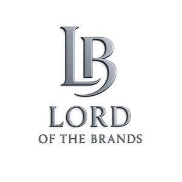

Trade Mark Journal No.2025/047 21 November 2025
UK00004292158 10 November 2025 (3,5,12,18,21,25,35)

- Class 3
- Creams (Cosmetic -); Cosmetic creams; Cosmetics and cosmetic preparations; Sunscreens [for cosmetic use]; Cosmetic moisturisers; Cosmetic soaps; Sunscreen [for cosmetic use]; Facial lotions [cosmetic]; Cosmetic facial lotions; Cosmetic soap; Lotions for cosmetic purposes; Cosmetic masks; Tonics [cosmetic]; Dyes (Cosmetic -); Cosmetic dyes; Facial creams [cosmetic]; Facial creams [for cosmetic use]; Cosmetic powder; Cosmetic preparations; Anti-aging creams [for cosmetic use]; Facial cleansers [cosmetic]; Cosmetic pencils; Pencils (Cosmetic -); Anti-ageing creams [for cosmetic use]; Cosmetic kits; Kits (Cosmetic -); Facial moisturisers [cosmetic]; Cosmetic skin fresheners; Lacquer for cosmetic purposes; Anti-wrinkle creams [for cosmetic use]; Pro-collagen for cosmetic purposes; Cosmetic creams for the skin; Skin creams [cosmetic]; Skin creams [for cosmetic use]; Henna for cosmetic purposes; Facial cream [for cosmetic use]; Skin balms [cosmetic]; Serums for cosmetic purposes; Cosmetic tanning preparations; Cosmetic skin enhancers; Skin cleansers [cosmetic]; Collagen for cosmetic purposes; Cosmetic hair lotions; Cleansing creams [cosmetic]; Cosmetic rouges; Facial scrubs [cosmetic]; Self-tanning preparations [cosmetic]; Facial toners [cosmetic]; Suncare lotions [for cosmetic use]; Pomades for cosmetic purposes; Lip coatings [cosmetic]; After-sun lotions [for cosmetic use]; Skin cream [for cosmetic use]; Skin whitening preparations [cosmetic]; Anti-ageing serums for cosmetic purposes; Cosmetic creams and lotions; Anti-wrinkle cream [for cosmetic use]; Toning creams [cosmetic]; Cosmetic sun-protecting preparations; Adhesives for cosmetic purposes; Acne cleansers, cosmetic; Astringents for cosmetic purposes; Facial masks [cosmetic]; Glitter for cosmetic purposes; Cosmetic facial masks; Sunscreen creams [for cosmetic use]; Cosmetic sunscreen preparations; Facial washes [cosmetic]; Lip stains for cosmetic purposes; Cosmetic facial packs; Facial packs [cosmetic]; Geraniol for cosmetic purposes; Toners for cosmetic purposes; Skin care lotions [cosmetic]; Cosmetic nail preparations; Cosmetic massage creams; Retinol cream for cosmetic purposes; Cosmetic suntan lotions; Eyelashes (Cosmetic preparations for -); Cosmetic preparations for eyelashes; Cosmetic suntan preparations; Cosmetic hand creams; Skin toners [cosmetic]; Skin hydrators for cosmetic purposes; Cosmetic products for the shower; Procollagen for cosmetic purposes; Cosmetic creams for skin care; Skin care creams [cosmetic]; Pencils for cosmetic purposes; Cosmetic eye gels; Gels for cosmetic purposes; Hair care lotions [for cosmetic use]; Hair care creams [for cosmetic use]; Exfoliating scrubs for cosmetic purposes; Cosmetic sun-tanning preparations; Hair tonics [for cosmetic use]; Tooth powders [for cosmetic use]; Cosmetic preparations for slimming purposes; Slimming purposes (Cosmetic preparations for -); Cosmetic preparations for skin care; Self tanning creams [cosmetic]; Skin care (Cosmetic preparations for -); Cosmetic nourishing creams; Ointments for cosmetic use; Skin conditioning creams for cosmetic purposes; Moisturising gels [cosmetic]; Moisturising skin lotions [cosmetic]; Self tanning lotions [cosmetic]; Suntan oils for cosmetic purposes; Cotton for cosmetic purposes; Softening cleanser [cosmetic]; Moisturising concentrates [cosmetic]; Cosmetic face powders; Face powders [for cosmetic use]; Essences for cosmetic purposes; Cosmetics; Lint for cosmetic purposes; Artificial nails for cosmetic purposes; Cosmetic eye pencils; Sun creams [for cosmetic use]; Removable tattoos for cosmetic purposes.
- Class 5
- Wipes for medical use; Swabs for medical use; Medical plasters; Medical mouthwashes; Disposable sanitizing wipes; Eye bandages for medical use; Dressings, medical; Medical dressings; Sanitizing wipes; Vaginal washes for medical purposes; Medical and surgical dressings; Cotton swabs for medical use; Antibacterial wipes; Scrubs [preparations] for medical use; Disinfectants for medical use; Eye lotions for medical use; Tampons for medical purposes; Wipes impregnated with disinfectants for hygiene purposes; Tissues for medical use; Moleskin for use as a medical bandage; Nose drops for medical purposes; Disposable sanitising wipes; Eye pads for medical use; Cotton swabs for medical purposes; Sanitary preparations for medical use; Moist wipes impregnated with a pharmaceutical lotion; Alcohol swabs for medical purposes; Skin care creams for medical use; Mouth washes for medical purposes; Cotton for medical use; Cleansing solutions for medical use; Disinfectants for medical instruments; Clinical medical reagents; Mouth rinses for medical use; Balms for medical purposes; Herbal sprays for medical use; Sanitising wipes; Therapeutic creams [medical]; Chemical reagents for medical use; Chemical reagents for medical or veterinary purposes; Impregnated antiseptic wipes; Baby bottom balms for medical purposes; Reagents (Chemical -) for medical or veterinary purposes; Nasal sprays for medical purposes; Biological reagents for medical use; Bacteriological preparations for medical and veterinary use; Absorbent cotton for medical purposes; Mouth sprays for medical use.
- Class 12
- Safety harnesses for auto racing; Automobile bumpers; Automobile sunroofs; Automobile tires; Automotive vehicles; Automobile windows; Automobile windshield wipers; Motor car windows; Automobile chassis; Chassis (Automobile -); Automobile windshield sunshades; Automobile tyres; Automobile dashboards; Automobile engines; Automatic gearboxes for motor cars; Automotive cam drive systems for motor vehicles; Automobile wheels; Spoilers for automotive vehicles; Motor car doors; Car transporters; Motor car derived vans; Automobile bodies; Land automotive vehicles; Automobile windshields [windscreens]; Seats for automotive vehicles; Automobile hoods; Cup holders for use in automobiles [automobile accessories]; Automobile door handles; Clips adapted for fastening automobile parts to automobile bodies; Automobile wheel hubs; Motor cars; Motor car seats.
- Class 18
- Cosmetic bags; Cosmetic purses.
- Class 21
- Cosmetic brushes; Cosmetic sponges; Cosmetic utensils; Cosmetic spatulas; Cosmetic apparatus for microdermabrasion; Cosmetic powder compacts.
- Class 25
- Clothing; Knitwear [clothing]; Jackets [clothing]; Ready-to-wear clothing; Woolen clothing; Furs [clothing]; Clothing layettes; Garments for protecting clothing; Layettes [clothing]; Linen clothing; Headbands [clothing]; Headbands for clothing; Gloves [clothing]; Gloves as clothing; Clothes; Aprons [clothing]; Maternity clothing; Jerseys [clothing]; Kerchiefs [clothing]; Denims [clothing]; Shorts [clothing]; Cashmere clothing; Capes (clothing); Oilskins [clothing]; Gabardines [clothing]; Leather clothing; Clothing of leather; Leather (Clothing of -); Silk clothing; Parts of clothing, footwear and headgear; Collars [clothing]; Knitted clothing; Veils [clothing]; Hoods [clothing]; Windproof clothing; Embroidered clothing; Corsets [clothing, foundation garments]; Wristbands [clothing]; Belts [clothing]; Belts for clothing; Bandeaux [clothing]; Waterproof clothing; Casual clothing; Rainproof clothing; Visors [clothing]; Jackets being sports clothing; Jackets (Stuff -) [clothing]; Stuff jackets [clothing]; Playsuits [clothing]; Ready-made clothing; Bottoms [clothing]; Clothing for leisure wear; Infant clothing; Trunks being clothing; Latex clothing; Woven clothing; Clothing for sports; Sports clothing; Athletic clothing; Leisure clothing; Ties [clothing]; Drawers [clothing]; Drawers as clothing; Clothing for children; Muffs [clothing]; Bodies [clothing]; Clothing for babies; Tops [clothing]; Clothing for infants; Clothing for cycling; Weatherproof clothing; Triathlon clothing; Pockets for clothing; Water-resistant clothing; Fabric belts [clothing]; Handwarmers [clothing]; Beach clothing; Thermal clothing; Clothing for skiing; Chaps (clothing); Cowls [clothing]; Men's clothing; Fishing clothing; Braces for clothing; Mitts [clothing]; Dance clothing.
- Class 35
- Marketing research in the fields of cosmetics, perfumery and beauty products; Retail services in relation to beauty implements for humans; Retail services in relation to beauty implements for animals; Online retail store services relating to cosmetic and beauty products; Wholesale services in relation to beauty implements for humans; Wholesale services in relation to beauty implements for animals; Commercial information and advice services for consumers in the field of beauty products.
Lord of the brands ltd